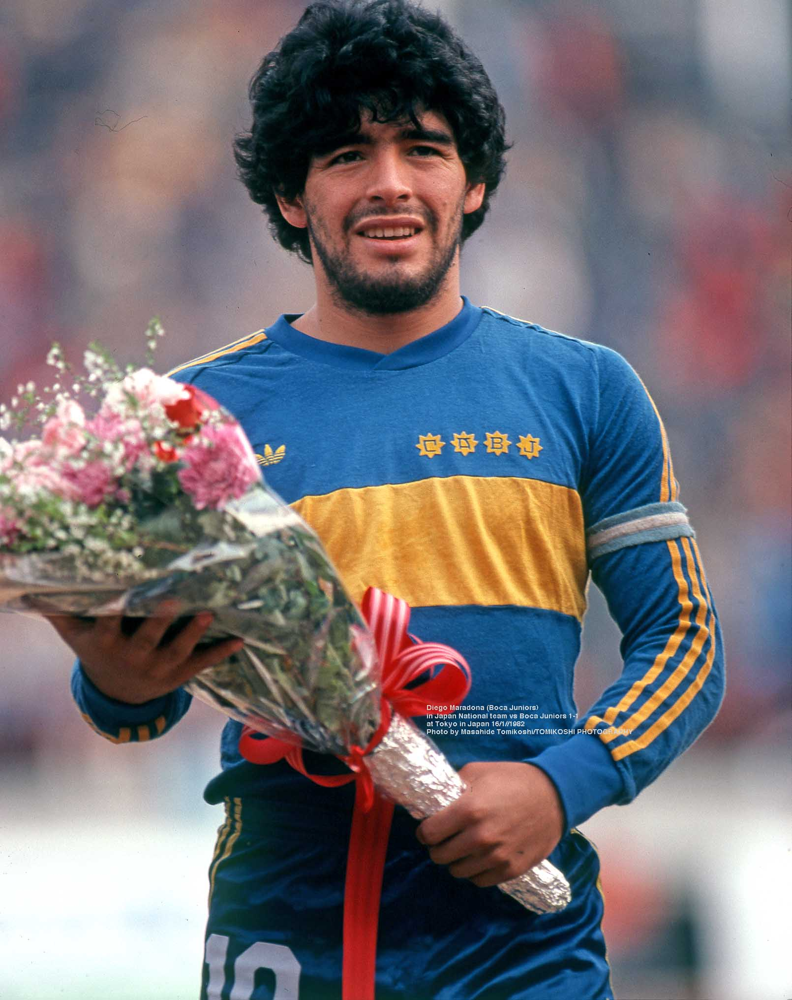
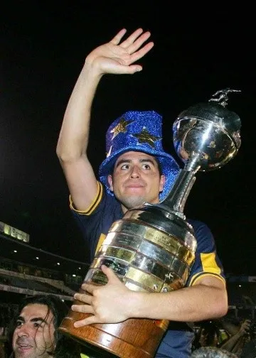
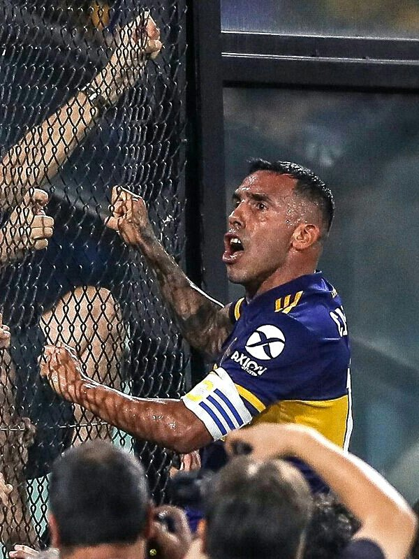

Club Atletico Boca Juniors
Boca Juniors es uno de los clubes de fútbol más importantes y populares de Argentina y del mundo. Fundado en 1905 en el barrio de La Boca, Buenos Aires, el club ha construido una historia llena de títulos, pasión y una hinchada única. En este sitio vas a poder encontrar información sobre su historia, plantel actual, estadio y mucho más.

"¡Yo quiero que me lleven a la tumba con la camiseta de Boca!"

"Soy bostero y me voy a morir bostero."

"Yo tengo sangre azul y amarilla. Boca es mi vida."